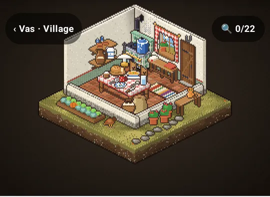
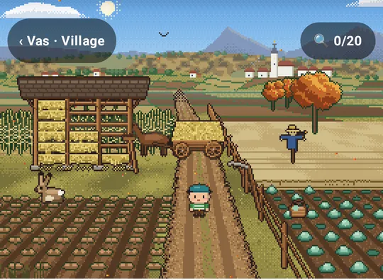
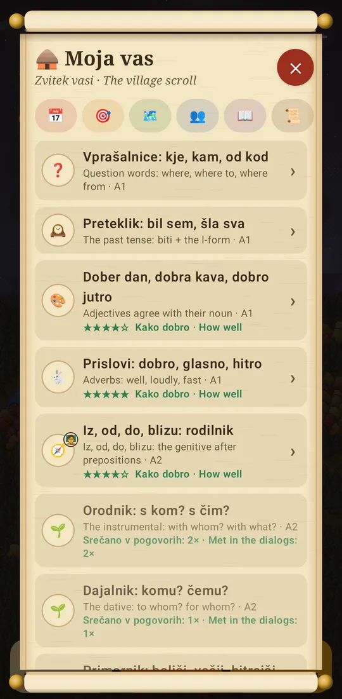
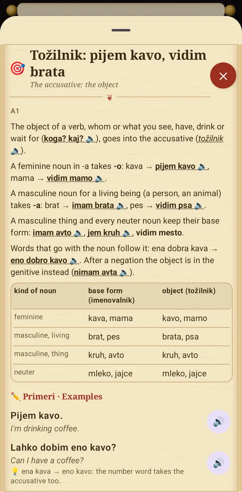
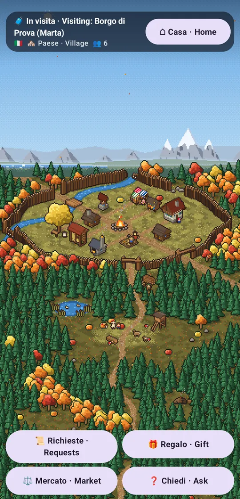
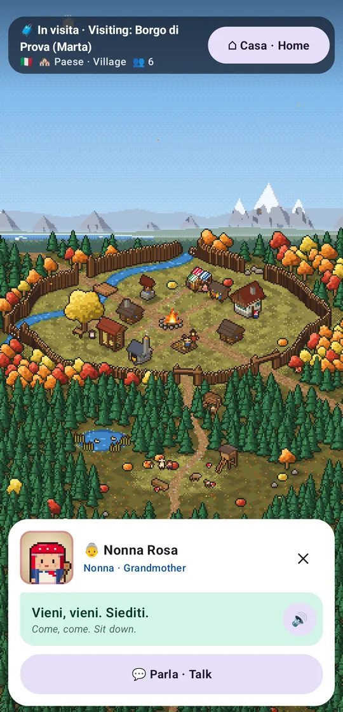
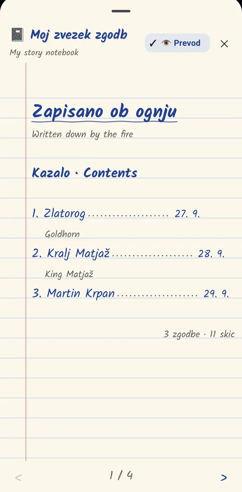
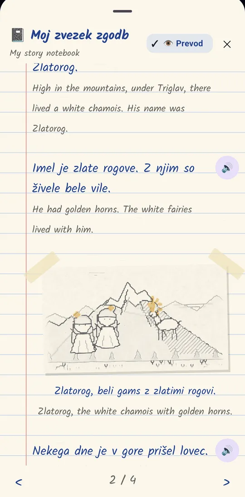

Dobro jutro! Dobrodošli v vasi. Good morning! Welcome to the village.
Lani
Learn Slovene by living in a little village.
An Android game with a pixel-art village whose people speak to you, a grammar book that opens as you go, and your own Claude Code session as the tutor behind it, writing new dialogs, stories and exercises as you progress.
Early, active development · one daily learner · self-hosted · AGPL
08:00 Luka si greje roke · Luka warms his hands
Dan v vasi A day in the village
A dozen villagers live their own days. France mows in the dew and harvests his field, Tone forges at the smithy, Babica Micka bakes potica and brings soup to the fire, and every evening Stari Janez tells a legend there. They ask for help in Slovene: a bubble over someone's head is a request, a little exercise in what they need.
What you do for them builds the village. It starts as a campfire in a clearing and grows with the words you learn, age by age, towards your target level:
- Ogenj Campfire
- Tabor Camp
- Zaselek Hamlet
- Vas Village A2
- Trg Market town B1
- Mesto Town
The village keeps time with yours: mornings, rain, the moon, a merchant from Gorizia at the gate, a feast under the linden. Its sounds are synthesized in code too. Have a listen:
- France kosi v rosi France mows in the dew
- Tone kuje podkev Tone is forging a horseshoe
- Mojca pri vodnjaku: dvojina! Mojca at the well: the dual!
- Tine zvoni poldne Tine rings the noon bell
- Otroci igrajo nogomet The children are playing football
- Babica prinese juho Grandma brings soup
- Janez pripoveduje zgodbo Janez tells a story
- Sova se oglaša An owl is calling
10:30 Zala bi se igrala skrivalnice · Zala wants to play hide-and-seek
Prizori in pogovori Scenes and dialogs
Every place of the village opens into a close-up: indoors an isometric diorama, outdoors a view to the hills. You find the words in the picture by tapping the things in it, and you talk to whoever is there today.


Find the words in the picture
Tap the scarecrow and it says strašilo, with its gender and plural and a sentence to go with it. Some things show only at dawn, by night, or not in winter; the panel under the picture keeps count of what's here now, what you've seen before and what's still hidden.
Talk to people, your way
A dialog's turns adapt to what you know. While a rule is new, you choose; once you have it, you type the missing word; some turns are answered by tapping the picture, and any turn can be said aloud instead. The dialogs only ask for what the grammar book says you've met.
Babica prinese juho Grandma brings soup
In the evening Babica Micka brings soup to the fire. Three answers, one right: the others are near misses that teach something (žejen is thirsty, dobro jutro is for the morning).
Dober večer, Jan! Si lačen? Good evening, Jan! Are you hungry?
Skrivalnice Hide-and-seek
Zala counts with you, then hides. The turn is »Poišči v prizoru«, find it in the scene. The learner taps under the table, and that's the answer:
Aha, pod mizo si! Aha, you're under the table!
Luka si greje roke Luka warms his hands
A cold morning by the fire. Luka is young and a friend, so it's ti: the imperative is sedi, not sedite. The keyboard comes up with the letters č, š and ž ready.
Dobro jutro, Luka! Seveda, sedi. Good morning, Luka! Of course, sit down.
Try it: tap a word
Every line in the app is made of words you can tap. Each opens its card: the dictionary word, what this form is, its meaning, its partner, its forms.
Babica Micka
! , .
Good evening! Sit down, sit down.
Tap a word on the left.
11:30 Mojca pri vodnjaku: dvojina! · Mojca at the well: the dual!
Slovnica The grammar book
The village scroll, a book once the hamlet is a village, has a page for every rule: 44 for Slovene, from biti to the six cases, aspect and the dual. A page is written in the first time you meet its rule in an exercise, and its stars say how well you know it.
Rules you've only met in the dialogs wait, greyed: »Še ne«, not yet. The dialogs and the word forms only ask what the book has opened, your mistakes show up on the rule's page, and the tutor can write a new page when you need one.


The six cases, on one house
Each case has its school questions. Ask the question, and the answer takes its case. Pick a row.
| Case | Questions | Form |
|---|---|---|
| 1. imenovalniknominative | kdo? kaj? | hiša |
| 2. rodilnikgenitive | koga? česa? | hiše |
| 3. dajalnikdative | komu? čemu? | hiši |
| 4. tožilnikaccusative | koga? kaj? | hišo |
| 5. mestniklocative | pri kom? pri čem? | pri hiši |
| 6. orodnikinstrumental | s kom? s čim? | s hišo |
To je hiša. This is a house.
Luka šteje ovce · Luka counts his sheep
Slovene has a dual: one form for exactly two. After a number the noun changes, and so does the verb.
Tu sta dve ovci. Here are two sheep.
2: dvojina · the dual
12:00 Tine zvoni poldne · Tine rings the noon bell
Besede in oblike Words and their forms
Words stay with spaced repetition (SM-2): a card comes back just before you'd forget it. A word you remember each time waits longer and longer:
- 1 day
- 6
- 15
- 38
- 94 days
The cards take many forms: flashcards, listening, dictation, speaking. Once you know a word, its forms come too: its conjugations and cases, as far as the grammar book has opened them, each in a sentence from the village. »Zaklenjene odpre stran v knjigi«: a page of the book opens the locked ones.
A villager keeps you company in the reviews. In the clip it's Teta Ančka: »Kaj? Kdo ste? Glasneje!« (What? Who are you? Louder!)
Vstavi pravo obliko · Fill in the right form
16:00 Na poti domov · On the way home
Za pot In the car
For long drives there's an Android Auto mode: audio drills prepared on the phone ahead of time and played with the steering wheel's buttons. You hear the meaning, say it aloud, then hear how it's said and repeat it.
- Preobrat Transformations: Micka kuha kosilo. Into the past! → Micka je kuhala kosilo.
- Hitri odziv Rapid fire: a number, a time, a date, two seconds to say it.
- Gradnja stavkov Sentence building: a sentence grows a step at a time.
- Uganke Riddles: Stari Janez describes a thing of the village in three or four clues.
Med vožnjo ne glej na zaslon. While driving, don't look at the screen.
Gradnja stavkov · Sentence building
Press ▶ to start.
17:30 Na obisku · Visiting
Druge vasi Other villages


Villages can be linked, by invitation only, and visited. A visit is in the host village's language: its people talk to you in it, its requests can be done, a gift or a message left, its market haggled at, its learner asked a question they answer in their language. Linked villages grow a friendship both agree on, from Znanstvo (acquaintance) to Pobratenje (twin towns).
- Primorska: the Slovene village, on the Trnovo plateau above Nova Gorica, where it all began.
- Friuli: an Italian town in the Collio near Gorizia, the sea on the horizon.
- Kärnten: a German village in the Gailtal near Villach.
- Lakeland: an English village in a dale of the Lake District.
Any two of Slovene, English, Italian and German make a pair: the language you learn and the one it's explained in. The screenshots show a test town from the app's QA, in Friuli.
20:00 Janez pripoveduje zgodbo · Janez tells a story
Zgodbe ob ognju Stories by the fire
Every evening Stari Janez sits by the fire and tells a legend in chapters, at your level, and asks you along the way: Martin Krpan, Zlatorog, Kralj Matjaž, Peter Klepec.
Each story is written down in your notebook, »Moj zvezek zgodb«, in a hand-drawn style with pencil sketches taped in: every story you've heard, to read again, listen to, and be quizzed on.


Zlatorog, beli gams z zlatimi rogovi.
Zlatorog, the white chamois with golden horns.
21:00 Teta Ančka posluša radio · Aunt Ančka listens to the radio
Učitelj The tutor
Behind the app runs a Claude Code session on your machine: your tutor. The app's chat goes straight to it. It knows what you got wrong yesterday, answers about any exercise, and builds the content as you progress:
- new dialogs, scenes and villagers' lines, at your level
- evening stories and grammar pages
- word packs and practice modules for your weak spots
- fixes for anything you report as wrong, with what it cost you given back
It publishes them to the app through the bridge's MCP tools, and the phone shows them at once. In the chat you can bookmark an answer, reply to a message from last week, or look things up in the archive.
The tutor's skills grew from m98/fluent, the AI language learning kit for Claude Code. It also works on its own, in the terminal.
Tvoj učitelj · Your tutor example
About: »Dober večer! Sedite, sedite.«
Zakaj »sedite« in ne »sedi«?
Sedite is the vi form: Babica is talking to several of you, or politely to one. To one friend it's sedi, as you told Luka this morning.
Both are sesti, to sit down. Sitting there already is sedeti: Babica sedi pri ognju.
📌 Bookmarked↩︎ Reply
New in the village: a short drill on ti and vi for tomorrow.
22:00 Luka je na straži · Luka is on watch
Kako deluje How it works
companion/android/
The app, in Kotlin and Jetpack Compose. The village, the scenes and the people are drawn in code.
companion/bridge/
Serves the app, keeps your data (progress, mistakes, reviews, the village) as JSON on your machine, and lets the tutor publish content.
companion/cultures/ · scenes/ · grammar/
The villages and their people, the scenes and stories, the grammar pages: content anyone can read and correct.
.claude/
The tutor's skills and hooks. LEARNING_SYSTEM.md is its method: active recall, SM-2, immediate feedback.
22:45 Nejc ne more spati · Nejc can't sleep
Na svojem računalniku Run it yourself
Lani runs self-hosted today: the bridge and the tutor on your computer, the app on your Android phone. There is no hosted version and no store release. You need Claude Code, Bun and an Android phone; for the app, JDK 21 and the Android SDK.
-
Get the code and start your tutor
git clone https://github.com/fentas/lani.git && cd lani cd companion/bridge && bun install && cd - # once companion/bin/lani-session # starts your tutor (tmux); detach with Ctrl-b d -
Build and install the app
cd companion/android ./gradlew :app:assembleDebug adb install -r app/build/outputs/apk/debug/app-debug.apk -
Pair the phone: scan the QR code in the app
companion/bin/lani-pair # a QR code to connect the app
The full guide (pairing, Tailscale, voices, speech recognition, the bridge as a service, backups) is in companion/README.md. The tutor works in the terminal on its own too: docs/claude-tutor.md.
23:30 Sova se oglaša · An owl is calling
Odprta koda Open source
Lani is free software under the GNU Affero General Public License 3.0 or later. It began as a fork of m98/fluent by Mohammad Kermani and the Fluent contributors (MIT); the parts from it stay available under MIT as well.
Corrections to the Slovene are especially welcome: much of the content is machine-written and marked so until a native speaker has read it. See CONTRIBUTING.md.
Credits
- Dictionary
- Wiktionary via kaikki.org, CC BY-SA 4.0
- Notebook's handwriting
- Kalam by the Indian Type Foundry, SIL Open Font License 1.1
- Ambient sounds
- Synthesized in code, CC0 1.0
- Pixel art
- Drawn by code in the app, part of the program
- This site's fonts
- Pixelify Sans, Nunito and Kalam, SIL OFL 1.1
Details in NOTICE.md.